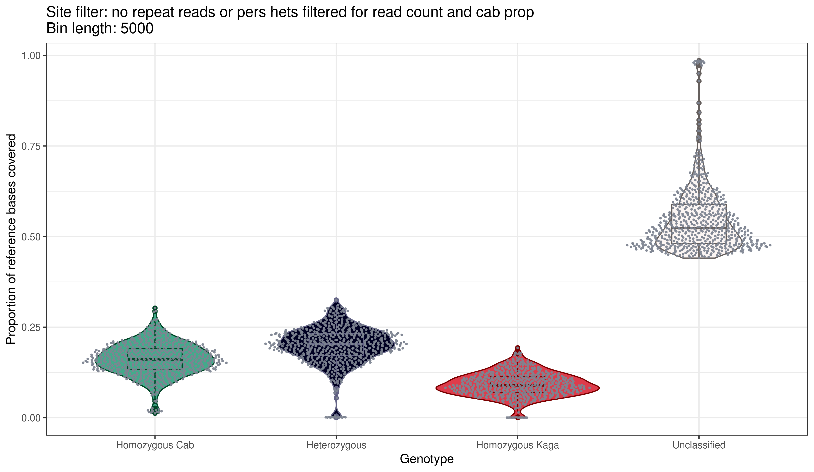
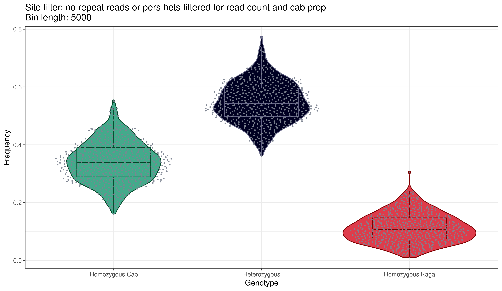

2 F2 recombination blocks
Exclusions: - reads overlapping HdrR repeat regions - regions of persistent heterozygosity in the MIKK panel - filtered based on read count and proportion of Cab)
Snakefile for generating figures: https://github.com/brettellebi/somites/blob/master/workflow/rules/05_F2_recomb_blocks.smk
library(here)
#> here() starts at /Users/brettell/Documents/Repositories/somites
site_filter = "no_repeat_reads_or_pers_hets_filtered_for_read_count_and_cab_prop"2.1 Base coverage
2.1.1 Total
knitr::include_graphics(here::here("book/plots/snakemake", site_filter, "5000/base_cov_total.png"))
2.1.2 By chromosome
knitr::include_graphics(here::here("book/plots/snakemake", site_filter, "5000/base_cov_by_chrom.png"))
2.2 Proportion of sites
2.2.1 Total
knitr::include_graphics(here::here("book/plots/snakemake", site_filter, "5000/prop_sites_total.png"))
2.2.2 By chromosome
knitr::include_graphics(here::here("book/plots/snakemake", site_filter, "5000/prop_sites_by_chrom.png"))
2.3 Karyoplots
2.3.1 No missing blocks
knitr::include_graphics(here::here("book/plots/snakemake", site_filter, "5000/karyoplot_no_missing.png"))
2.3.2 With missing blocks
knitr::include_graphics(here::here("book/plots/snakemake", site_filter, "5000/karyoplot_with_missing.png"))